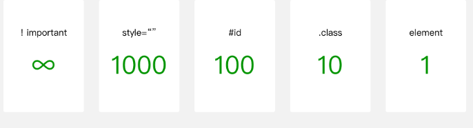

from developers.weixin.qq.com:
目前支持的选择器如表2-2所示。
表2-2 小程序WXSS支持的选择器
类型 选择器 样例 样例描述
类选择器 .class .intro 选择所有拥有 class="intro" 的组件
id选择器 #id #firstname 选择拥有 id="firstname" 的组件
元素选择器 element view checkbox 选择所有文档的 view 组件和所有的 checkbox 组件
伪元素选择器 ::after view::after 在 view 组件后边插入内容
伪元素选择器 ::before view::before 在 view 组件前边插入内容
WXSS优先级与CSS类似，权重如图2-13所示。

图2-13 WXSS选择器优先级
权重越高越优先。在优先级相同的情况下，后设置的样式优先级高于先设置的样式。
代码清单2-25 WXSS 选择器优先级权重
imrdr: element
view{ // 权重为 1
color: blue
}
imrdr: wxss
.ele{ // 权重为 10
color: red
}
#ele{ // 权重为 100
color: pink
}
view#ele{ // 权重为 1 + 100 = 101，优先级最高，元素颜色为orange
color: orange
}
view.ele{ // 权重为 1 + 10 = 11
color: green
}